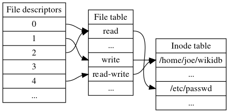

File descriptor
To the kernel, all open files are referred to by File Descriptors. A file descriptor is a non-negative number. When we open an existing file or create a new file, the kernel returns a file descriptor to the process. When we want to read or write a file, we identify the file with the file descriptor.
Each Linux process (except perhaps a daemon) should expect to have three standard POSIX file descriptors:
| POSIX Constants Name | File Descriptors | Description |
| STDIN_FILENO | 0 | Standard input |
| STDOUT_FILENO | 1 | Standard output |
| STDERR_FILENO | 2 | Standard error |
There are three "system file tables": There is a file descriptor table that maps file descriptors (small integers) to entries in the open file table. Each entry in the open file table contains (among other things) a file offset and a pointer to the in-memory inode table. In open file table, one file table entry per open() call, and it is shared if the file descriptor is dup()ed or fork()ed.
We use an example from wikipedia to show how these tables work. Here's a picture: 
File descriptors for a single process, file table and inode table. Note that multiple file descriptors can refer to the same file table entry (e.g., as a result of the dup system call) and that multiple file table entries can in turn refer to the same inode (if it has been opened multiple times; the table is still simplified because it represents inodes by file names, even though an inode can have multiple names). File descriptor 3 does not refer to anything in the file table, signifying that it has been closed.